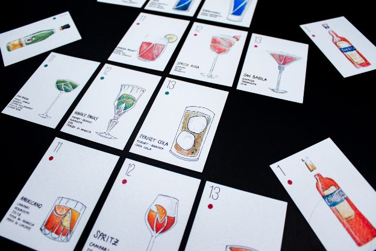
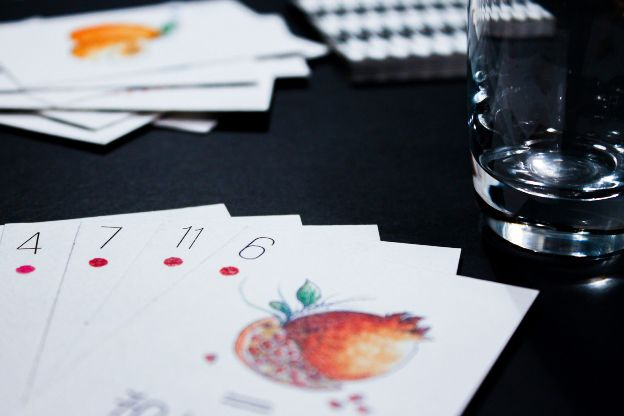
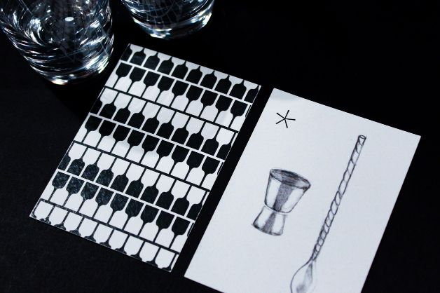

<!DOCTYPE html>
<html lang="en">
  <head>
    <meta charset="utf-8" />
    <meta name="viewport" content="width=device-width, initial-scale=1.0" />

    <title>Andrea Corsini - milano da bere</title>
    <link rel="icon" type="image/x-icon" href="assets/favicon.png" />

    <link rel="stylesheet" href="style.css" />

    <script src="libraries/p5.min.js"></script>
  </head>
</html>
<body>
  <a id="titolone" href="index.html">andreacorsini.it</a>
  <a id="projects" href="javascript:window.open('','_self').close();">back</a>

  <div id="totale">
    <div id="immagini">
      <div style="overflow: scroll">
        
        
        
      </div>
    </div>
    <div id="testi">
      <div id="testo">
        <span style="font-weight: 500; font-size: 3vh">Milano da Bere</span
        ><br /><br />
        Milano da Bere is a deck of cards with a Milanese alcohol theme. It is a
        complete poker deck, whose signs are the 4 best-selling spirits born in
        Milan, respectively Gin Rosa, Amaro Ramazzotti, Campari and Fernet
        Branca.<br />
        The cards are themed, in particular the aces are represented by the
        bottles, the numbers are the ingredients and botanicals present in the
        liqueurs, the best-selling markets around thew world and some historical
        curiosities, the face cards are represented by the most famous cocktails
        based on these spirits, finally the jokers are represented by the mixing
        tools . The illustration style is watercolor associated with hand
        lettering and very rough paper.<br />
        <br /><br />
        <span style="font-size: 1.5vh">
          in collaboration with:<br />
          Giulia Lisoni<br />
          Annachiara Terrone<br />
        </span>
      </div>
    </div>
  </div>
</body>
